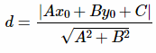
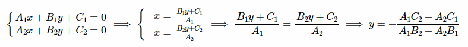

AlgoHome
Для лучшего понимания материала ознакомьтесь с профессиональными статьями. Например на Алгоритмике.
Скалярное произведение – произведение длин векторов на косинус угла между ними. Координатная форма: xa*xb + ya*yb.
Векторное(косое) произведение – произведение длин векторов на синус угла между ними. Координатная форма: xa*yb – xb*ya. Геометрически означает ориентированную площадь параллелограмма, натянутого на вектора. С помощью этого можно понимать какой вектор «левее» или «правее». a^b = - (b^a).
Ax + By + C = 0. A = y2 – y1. B = x1 – x2. C = x1*(y1-y2) + y1*(x2-x1) = - A*x1 – B*y1. Вектор нормали прямой – n(A, B).
Расстояние от точки до прямой:.
Точка пересечения двух прямых: по сути, нужно найти x, y которые подходят системе уравнений из двух уравнений прямых. Оттуда выводятся x и y. Причем, если знаменатель равен нулю, то прямые параллельны.
Если интересен случай совпадения прямых, не подходит просто a1==a2, b1==b2 и c1==c2. Можно попытаться подставить какой-нибудь x в оба уравнения и посмотреть на y. При этом стоит учитывать, что прямая может быть параллельно оси OY (например уравнение прямой: x = 5). Подумайте как можно это сделать.
Для определения существования пересечения необходимо воспользоваться векторными произведениями. Чтобы конечные точки отрезков лежали в нужной нам последовательности: одна точка второго отрезка слева от точки первого, другая точка справа. Аналогично с первым отрезком относительно второго. Также возможет случай, что два отрезка лежат на одной прямой, в этом случае нужна дополнительная проверка. Есть ли пересечения в x координатах и в у координатах.
Если интересна сама точка пересечения, придется пользоваться уравнениями прямых.
int x1,x2,x3,y1,y2,y3,x4,y4;
cin>>x1>>y1>>x2>>y2>>x3>>y3>>x4>>y4;
pt a(x1,y1),b(x2,y2),c(x3,y3),d(x4,y4);
bool flag1 = (((c-a)^(b-a))*((b-a)^(d-a))>=0);
bool flag2 = (((a-c)^(d-c))*((d-c)^(b-c))>=0);
if (flag1 && flag2) {
int x1l = min(a.x,b.x),
x1r = max(a.x,b.x),
y1l = min(a.y,b.y),
y1r = max(a.y,b.y),
x2l = min(c.x,d.x),
x2r = max(c.x,d.x),
y2l = min(c.y,d.y),
y2r = max(c.y,d.y);
if (per(x1l,x1r,x2l,x2r) && per(y1l,y1r,y2l,y2r)) cout<<"YES"<<endl; else cout<<"NO"<<endl;
} else cout<<"NO"<<endl;Функция per возвращает пересекаются ли отрезки.
Нужно воспользоваться формулами векторного произведения. Для каждой стороны многоугольника найдем ориентированную площадь (векторное произведение) треугольника OAB, где O - совершенно любая точка. При этом нужно идти в порядке обхода точек. Так отрицательные площади уничтожат лишние положительные. Итоговую площадь нужно разделить на 2. Аналогично проводится проверка на содержание точки. В этом случае все векторные произведения AP^AB, где P проверяемая точка, в порядке обхода ребер, должны быть одного знака.
struct pt{
long double x,y;
pt(int x1,int y1) {x = x1,y = y1;}
};
struct line{
long double a,b,c;
line(pt p1,pt p2) {
a = p2.y - p1.y;
b = p1.x - p2.x;
c = p1.x*(p1.y - p2.y) + p1.y*(p2.x-p1.x);
}
};
long double len(pt a) {
return sqrt(a.x*a.x + a.y*a.y);
}
pt operator + (pt a,pt b) {
return pt(a.x + b.x,a.y + b.y);
}
pt operator - (pt a,pt b) {
return pt(a.x - b.x,a.y - b.y);
}
long double operator * (pt a,pt b) {
return a.x*b.x + a.y*b.y;
}
long double operator ^ (pt a,pt b) {
return a.x*b.y - a.y*b.x;
}
cout<<fixed<<setprecision(10)<<ans<<endl;Поворот системы координат на 45° - (x + y, x - y). Чтобы понять смысл этого, посмотрите задачу "Задача 3. Иннокентий и путешествие. Заключительный этап Всесибирской 2019/2020". Задача довольно сложная, но важна сама идея поворота.
Здесь не будет таблицы задач. Очень большой спектр задач есть на Informatics, в теме Геометрия. Начать нужно именно отсюда.
Также отличной тренировкой будет решение задач на Геометрию с Всесибирской олимпиады. На официальном сайте олимпиады доступны разборы. Дорешка на сайте NSUTS, в разделах школьные тренировки(или что-то такое).